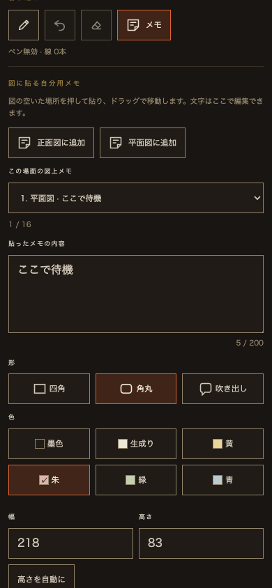
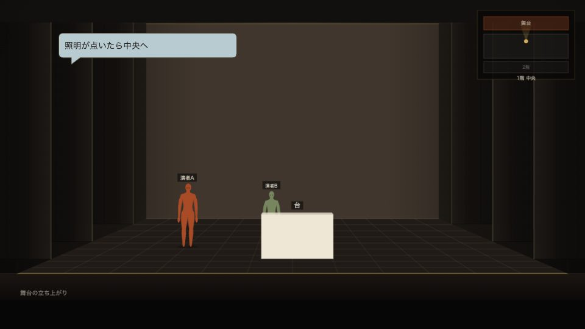

貼り付けメモの形・色・大きさを選ぶ
2026年9月10日・ローカル反映。Viewerの既存メモを選ぶと、側面の編集欄から変更できます。以前に保存したメモは四角・墨色・幅188px・高さ自動のままです。
- 形：四角・角丸・吹き出し。
- 色：墨色・生成り・黄・朱・緑・青。文字色も読みやすい組み合わせに固定。
- 大きさ：右下をドラッグ、または幅・高さの入力欄で調整。高さを自動にすると文章に合わせます。幅120〜400px、高さ44〜320px。狭い図では表示範囲へ収めます。
- 保存・履歴コピー：形・色・大きさも自分用ノートへ保存。公開更新で残った以前の付箋を選んで引き継ぐと、見た目も保持します。
- 共有：「このメモと図をオーナーへ共有」で送った画像に反映。未共有の付箋をオーナーへ自動送信しません。
元のViewerで確認する → メモ → この場面の図上メモから選択。既存の「テスト」を選び、編集欄を開いた状態にしています。内容・色・形は変更していません。
画面
側面の形・色・大きさ

オーナーへ届く共有画像

検証
- 対象Nodeテスト60 / 60成功。全18通りの形・色、寸法上下限、不正型・任意CSSの拒否、旧メモ互換、履歴コピーを確認。
- 実Worker / SQLite：演者アカウント17 / 17、事前学習リンク28 / 28、既存リアルタイム共有13 / 13成功。再起動後も現在・過去の付箋の見た目を保持。
- Chrome：4グループ成功、pageerror 0。18通りの切り替え、幅・高さ入力、右下のドラッグ、再読み込み、自動高さ、共有画像の色を確認。
- 日英・1440 / 768 / 390 / 844px幅：ラベル、44px操作域、横はみ出しなし、保存内容不変を確認。タッチ模擬でも形・色・右下のドラッグを確認。
- 文字と付箋色のコントラスト：墨色10.28、生成り13.61、黄11.60、朱8.93、緑10.21、青9.95（contrast.mjs実測、すべて4.5:1以上）。
- 変更したJSの構文、build_stage.py --check、git diff --checkは成功。
全体検査の留保：全Nodeテストは883 / 888成功、5件失敗。本家コードの同時変更による、仮面の翻訳登録、中国語2パックの件数、ゲスト入力ガードの旧正規表現、資源版番号の期待値に関する失敗です。今回のViewer用ファイルからは変更していません。公開ビルド検査も本家側の生成物の古さを検出し、同時作業中の生成物を上書きしていません。別作業完了後に全体検査・公開ビルドの再確認が必要です。
ブラウザ結果 · 対象テスト · 全体テスト · 個人ノート保存 · 既存Worker検査 · トークンシート
保存方式・変更範囲
既存の個人ノートに任意フィールドshape / color / width / heightを追加し、サーバーで許可値・有限数・上下限を検証。匿名ベータはブラウザ内、アカウント方式は既存の本人専用ノートへ保存します。描画はSVG、共有画像は同じパスから描画。元のショーJSONと編集権限は変えません。
変更：stage-study-sticky.js、stage-study-private.js、stage-study-viewer.js、study-reader-account.js、stage-study.css、study.html、build_study.pyと生成されるstudy-frame.html、tests/study-sticky.test.mjs、tools/study-reader-runtime-check.mjs、トークンシート。追加：tools/study-sticky-style-browser-check.mjs、この確認記録とsticky-style-qa/。
本家・ベータが共用するViewerに反映済み。新しいDO・migration・Cloudflare設定の追加はありません。既存の事前学習機能の設定は以前の設定記録を参照。本番ではクライアントとWorkerを揃えて配布する必要があります。現在はローカルのみで、commit・push・デプロイ・公開・外部送信・秘密情報登録は行っていません。
既存の未コミット差分は保持しています。同時作業で変わった本家のファイルを巻き戻さず、今回はViewerの対象だけ編集しました。8802サーバーは同じSQLite保存先で再起動し、公開版とショーのハッシュ一致を確認しています。
残る確認
iPhone / iPad Safari実機での指操作・画面キーボード、本番環境の同期は未確認です。次は実機で付箋をつかむ位置と色の読みやすさを確認できます。